GESTIÓ CURSOS EN GESFORM
En aquest tutorial expliquem tot allò que estpa relacionat amb Gesform i la gestió de cursos. És important que seguiu els passos indicats per tal de no tindre problemes a l'hora de gestionar les formacions.
Voreu que al llarg del procés de vida d'una formació caldrà que vingueu ací per a consultar el procediments corresponent.
COM CREAR UN CURS NOU
Qual volem crear una formació nova podem duplicar una semblant o crear una des de zero. Si comencem a crear l'edició des de cero cal:
Anar a Mis Ediciones -- Ver
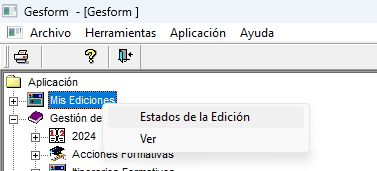
Anem al tercer icono Añadir nuevo Registro

Caldrà omplir la fitxa que apareix:
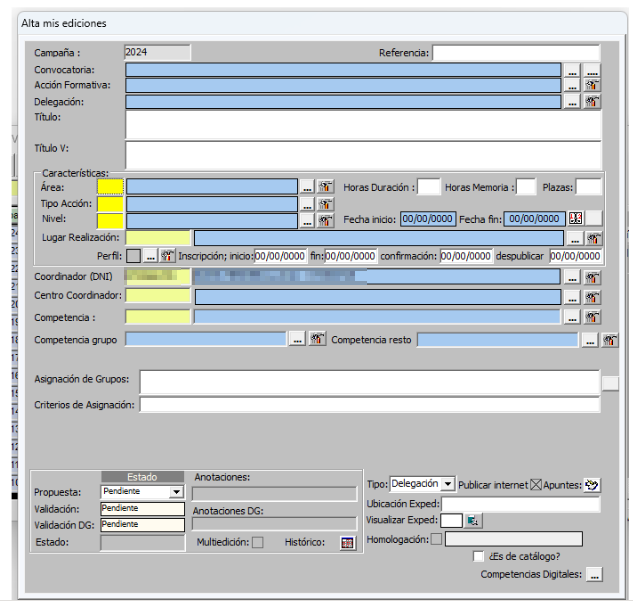
A continuació hi ha els diferents camps que cal omplir i una fitxa completa amb la informació.
-
Convocatòria - Cal escollir una convocatòria segons el tipus de formació que es vol realitzar:
- FSE 2025
- PAA + període en què es realitza la formació (per exemple: PAA Setembre-Desembre 2025)
- Skills 2025
- Competència Digital
- Administracions Públiques
-
Acción Formativa - "Percha" - Mirar de les diferents perxes quina s'adapta més a la nostra formació.

Posem l'àrea 97 i consultar

Important
Utilitzeu de base la formació 19FP43CF144 (Didàctica) si no voleu que vos afegixca cap informació extra. Paga la pena fer-ho així per controlar tota la informació que s'ha d'afegir.
-
Delegación - CEFIRE de Formació Professional i ERE
-
Titulo / Título V
-
Área: 97 -- Horas i plazas (nombre de places que s'oferten)
-
Tipo de acción - CD (Curs a distància), C (Curso), etc...
-
Nivell -- CF (En el cas que siga de formació professional)
-
Lugar -- ADIST: En el cas que siga 100% a distància, ADISTSINC: En el cas que siga 100% a distància però amb sessions síncrones
-
Fecha inicio y fin de la formació
-
Dates inscripción inicio i fin, confirmación (final), despublicar (dos setmanes després de començar)
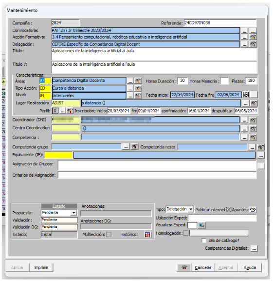
Important
Basant-se en les dates d'inscripció inici i fi... es recomana que com a mínim hi haja 1 mes d'inscripció, 1 setmana de confirmació i despublicar dos setmanes després de començar la formació.
A continuació Aplicar per tal que aparega marcat la X en perfil i tinguem el codi de referència.
Important
"Important" Este pas és extremadament important, cal vore una X en el perfil, si no apareix la X i modifiques alguna cosa estaràs modificant totes les formacions del CEFIRE que "perxen" d'eixa formació i crearàs un desastre monumental.
Ara caldrà introduir les característiques del curs. En la icona que hi ha al costat de la X del perfil i triar l'opció Mantenimento

Omplim la informació referent al curs. Objectius, Continguts, Material didàctic, Condicions, Observacions, Dirigit a. Podeu consultar el text de FSE ací

OBJECTIUS: Objectius que es pretenen aconseguir en el curs
CONTINGUTS: Continguts que es treballaran al curs.
MATERIAL DIDÀCTIC: Si el curs és online a AULES caldria posar:
El curs es realitzarà en línia a través de la plataforma d'aula virtual de formació del professorat, on s'allotjaran els materials i es realitzaran les activitats.
CONDICIONS: (informació donada per la SDGFP)
1. Acompliment d'un lloc de treball relacionat directament amb la temàtica de l'activitat.
2. Professorat d'especialitats docents relacionades directament amb la temàtica de l'activitat.
3. Orde d'inscripció seguint el següent criteri:
Personal docent en actiu en centres sostinguts amb fons públics. (De titularitat pública i privats concertats. Art. 108 LOE 2/2006).
Personal tècnic educatiu en actiu en centres sostinguts amb fons públics. (De titularitat pública i privats concertats. Art. 108 LOE 2/2006).
Personal inscrit en alguna de les bosses de personal docent de la Conselleria d'Educació, Universitats i Ocupació.
Resta del professorat. l curs es realitzarà en línia a través de la plataforma d'aula virtual de formació del professorat, on s'allotjaran els materials i es realitzaran les activitats.
OBSERVACIONS: Si el curs és online a AULES, un exemple seria:
El curs es realitzarà en la modalitat a distància. La realització de totes les tasques és obligatòria per obtindre la certificació. Serà obligatori accedir a l'aula virtual del curs durant els tres primers dies des de l'inici.
DIRIGIT A: (informació donada per la SDGFP)
Personal docent i personal tècnic educatiu amb destinació en centres educatius no universitaris de la Comunitat Valenciana en els quals s'impartisquen els ensenyaments regulats per la Llei orgànica d'Educació.
Personal docent i personal tècnic educatiu que preste servicis tècnics de suport educatiu als centres indicats en l'apartat anterior.
Personal que haja finalitzat els graus i màster que conduïxen a l'obtenció de la titulació docent, sempre que es troben inscrits en alguna de les bosses de personal docent de la Conselleria d'Educació, Universitats i Ocupació i este personal no supose més del 50% de participació en l'activitat.
I apliquem i aceptem.
Per últim abans de portar a validar per part del director anem a la icona que hi ha al costat de Apuntes
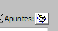
I triem l'opció Presupuesto

Afegim nou registre i omplim la informació

Codis
- Código: 226.06 Gastos diversos, Reuniones, conferencias, celebración de actos y cursos (personal no docente)
- Código: 233.02 Gastos de formación del personal docente
- Importe: Import que es preveu gastar en la formació.
- Descripción: Breu descripció del curs i de les seues característiques (tarifa aplicada)
I Apliquem i Acceptem.
Important
Una vegada estiga el curs és important que poseu en Kanban el curs per a que siga validat per part del director. Si no es posa en Kanban no es podrà validar.
Una vegada estiga validat el curs tant per part del director com per part de la SDGFP, ja es podrà publicar i començar a gestionar les inscripcions. No em d'oblidar que si el curs és online a AULES caldrà demanar l'espai en AULES.
PASSAR A CONFIRMAR UN CURS I BAREM
Una vegada finalitzat el període de d'inscripció cal ordenar als participants per passar el curs a confirmació.
Anar a Mis Ediciones -- Ver -- Extintor - Gestión solicitud de participants
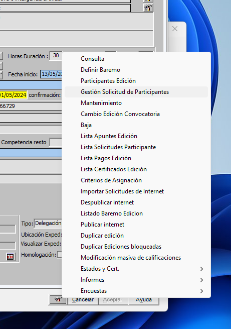
Treballarem en la pantalla que apareix en la que consten tots els inscrits.

El primer que farem serà mirar si com a participant apareix alguna persona amb el nom del coordinador. Aquests seran participants que no han sigut trobats per Gesform i els inscriu amb el nom del coordinador.
Si fem doble clic al nom del coordinador s'obrirà una finestra amb les dades de la persona que hi ha al darrere d'aquesta inscripció.
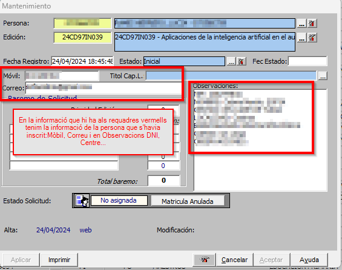
Copiem el DNI de la persona que hi ha en l'apartat de Observaciones i l'enganxem a la casella del DNI de Persona (a la mateixa finestra), si no apareix és que no és docent o encara no està donat d'alta.
Caldrà posar-se en contacte amb la persona per tal de comprovar si és docent o no. Si ho és caldrà donar d'alta a la persona. Escriurem un correu a compteformacio@gva.es amb totes les dades de la persona i el DNI per tal que ens donen d'alta a la persona. Cladrà posar-se abans en contacte amb ell per a que ens donen una prova com a que és docent. Recordeu que tots aquells docents de la Comunitat Valenciana (ensenyament reglats no universitaris) tenen dret a fer formació i per tant a inscriure's a les formacions del CEFIRE.
Una vegada ja tenim a tots els participants localitzats (els casos que tenim pendents el podem deixar per a un vegada acabe el termini de confirmació afegir-los). Anem a Extintor -- Definir baremo

Si apareix una finestra per solapament donar Aceptar per no excloure ara i posteriorment ho mirarem.

En la següent pantalla caldrà definir les característiques que donen puntuació per tal d'ordenar als participants. Si el curs té característiques que donen puntuació.
SITUACIÓN JURÍDICA (FC -- Func carrera; FI - Interí; FP - Pràctiques; LA -- Laborals; CA - Catedràtics) Per exemple si és administracions públiques podriem posar 5 als interins i 10 als funcionaris de qualsevol tipus.

ESPECIALIDAD I CUERPO -- Deixarem 0 si és internivell i si no determinar la puntuació a donar a cada especialitat o nivell.
TIPO DE ENSEÑANZA - PR -- Privada i PU - Pública
CONFIRMA Y NO ASISTE -- Si posa 0 és que no hi ha ningú dels inscrits que en altres formacions haguéren confirmat i no assistit i per tant penalitzariem, en aquest cas en el barém establirem una puntuació negativa. Per tal de penalitzar per aquesta situació.
Una vegada definit tot el barem Aplicar -- Aceptar.
Refrescar la pàgina, segona Icona.

A continuació caldrà ordenar als participants segons el seu barem.

De la finestra que apareix caldrà desmarcar l'opció Desc. Estado per que no ho tinga en compte.

Quedant de la següent manera la finestra:
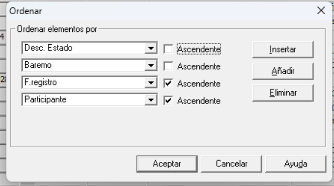
En la llista de gent a la part de la dreta en la segona columna, la gent que té un quadradet vermell significa que està actualment en altres formacions amb dates coincidents.

Caldrà excloure a aquells participants que tenen ja 3 formacions (màxim que es pot realitzar). Per fer aquesta acció hi ha l'opció Excluir solicitud x solapamiento situada la part superior dreta.

Aquests participants apareixeran al final amb estat Excluido
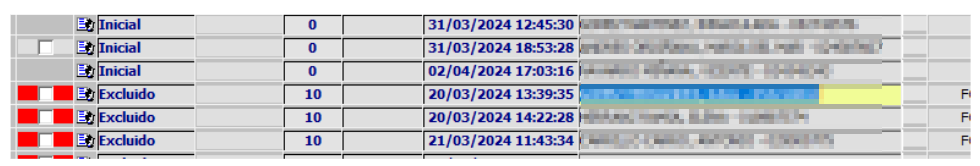
Per comprovar si això és correcte cal seleccionar a un participant exclòs i clicar a la part superior Ver Solicitudes que interfieren en fechas
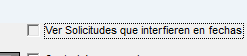

NOTA: Si apareix algun participant amb dues només pot ser que ja estiga admés a un altra però encara no actualitzat.
Una vegada revisat i ordenat amb relació al barem definit caldrà seleccionar tants participants com places hi ha al curs. En la finestra al costat dret de Marcar Participantes caldrà posar aquesta dada (places) i clicar a Marcar Participantes
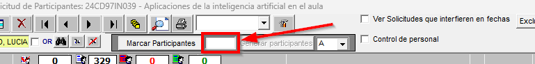
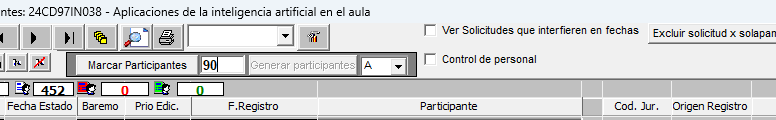
Apliquem. Ordenem de nou i veurem que ara els participants seleccionats estan en Estat Seleccionado i els de llista d'espera estaran en Estat Inicial


Per tenir el mail per poder informar de l'inici de la confirmació caldrà exportar un excel de participants.

Per tal que el curs estiga ja en confirmació pels participants, caldrà passar a estat confirmació. Per fer aquesta acció anem a Extintor -- Estados y Cert. - Passar a estado de confirmación
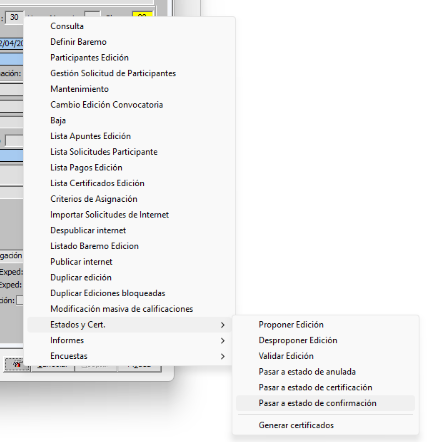
Finalment caldrà enviar un missatge a tots els inscrits informant que comença el període de confirmació.
El text per la redacció d'aquest correu està en el pdf Coordinació.pdf i és el següent:
Exemple de correu de confirmació (el dia de llistes provisionals)
Benvolguts i benvolgudes,
Ja està disponible la llista provisional de professorat admés al curs \"YY\" (enllaç &usuario=formacion).
Es tracta d'un curs en línia de 30h que tindrà lloc entre el DD de MM de 202A i el DDde MM de 202A.
Podeu consultar el llistat i confirmar o renunciar la vostra participació seleccionant l'enllaç que apareix al costat del vostre nom, a la dreta de la pàgina.
Per favor, fins el dia D de MM, confirmeu o renuncieu en funció de les vostres preferències per a deixar places lliures si realment no esteu interessats o interessades.
Es publicarà el llistat definitiu a partir del dia D de MM.
Si voleu fer una consulta, envieu un correu a les assessories coordinadores:
XX@edu.gva.es o YY@edu.gva.es
Salutacions
XX i YY
LLISTES DEFINITIVES PER PUBLICAR
Una vegada finalitzat el període de CONFIRMACIÓ, cal ordenar els participants i publicar les llistes definitives.
Abans de començar caldrà Extintor/Despublicar internet -- A la part inferior apareixerà el quadret de Publicar Internet sense marcar.


Una vegada despublicat cal anar a Extintor/Gestión Solicitud de Participantes
 "
"
I anem a ordenar -- deixant els paràmetres que apareixen.
 "
"
En la columna Descripción Estado tindrem als participants segons el seu estat:
- Confirmado -- Confirmat amb plaça
- Conf provisional -- Confirmat sense plaça (espera)
- Excluido
- Inicial -- No han fet res abans estaven en lista d'espera
- Seleccionado -- No han fet res, abans estaven en confirmat
- Renuncia

Mirem si s'ha passat algun en la creació de les llistes provisionals que com a participant tenia el nom del coordinador. Ordenem als participants, si no estem segurs filtrem. Si s'ha fet correctament no hauria d'estar cap participant amb el nom del Coordinador.
Si queda algú donem doble clic al nom i s'obrirà una finestra amb les dades de la persona que hi ha darrere d'aquesta inscripció.
Copiem el DNI de la persona que hi ha en l'apartat de Observaciones i lo copiamos en la casilla del DNI de Persona (de la mateixa finestra), si no apareix és que no és docent o encara no està donat d'alta. Caldria trucar per vore la situació en la que es troba, mirar amb aquesta situació quin barem tindria i si no entra al curs -- Eliminar el registre. Si entraria cal demanar-li justificació de la seua situació (per exemple nómina) i donar d'alta en Persones en Gesform.
Una vegada ja tenim tots els participants amb la identitat correcta. Filtrem per confirmados i tindrem els confirmats i confirmats provisionals.
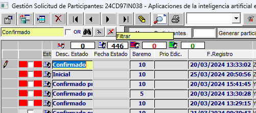
Ordenem de nou per estar segurs.

Deixem tal qual apareixen els paràmetres de l'ordre.
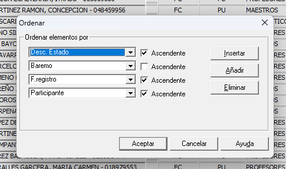
Donem a Excluir solicitud x solapamiento, per tal que s'eliminen els participants que actualment están en 3 o més formacions i no podríen fer el curs. A les finestres que apareixen donem a Aceptar.
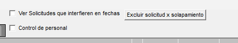
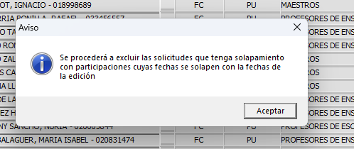
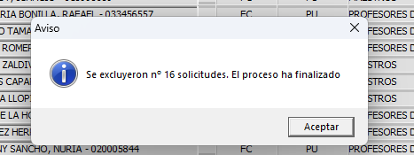
Mirem les persones que s'han exclòs per vore si tenen els cursos assignats i és correcta l'exclusió (3 cursos). Fem clic en la persona que volem mirar i posteriorment a la part superior a Ver Solicitudes que interfieren en fechas. Ens apareixerà la finestra per vore els cursos que té aquesta persona.

Ordenem de nou per estar segurs.

Marquem els participants que hi haurà en l'edició (en aquest cas 90), posem el 90 i cliquem en Marcar Participantes.
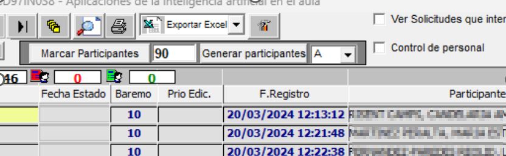
Con los 90 marcados exportamos para tener estos participantes.
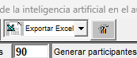
Donem ara a Generar Participantes A les següents finestres donem a Aceptar. Finalment donar a Aplicar.
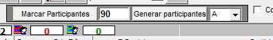
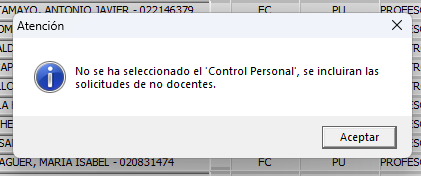

Apareixeran en verd els participants.

Si ens hem equivocat i has marcat més participants o li has donat dos cops i hi ha el doble de participants en verd. Caldria eliminar-los tots i tornar a començar, per traure el verd, marquem el nombre de participants que tens en verd i apliquem. Així els eliminaria.
Finalment comprovar que estan en Extintor -- Participantes Edición
Tornar a publicar. Comprovar que s'han publicat en la web les llistes.
Una vegada publicat, cal enviar correu als participants per indicar que ja estan els llistats definitius. Model de correu a continuació.
El text per la redacció d'aquest correu està en el pdf Coordinació.pdf i és el següent:
Exemple de correu de llistes definitives
Benvolguts i benvolgudes,
Ja està disponible la llista definitiva de professorat admés al curs \"24CD97ES038 -- Aplicaciones de la inteligencia artificial en el aula"
<https://cefire.edu.gva.es/sfp/index.php?seccion=edicion&id=11897023%20&usuario=formacion>
Podeu consultar-la en el següent enllaç:
<https://cefire.edu.gva.es/sfp/index.php?seccion=inscripciones/definitivo&id=11897023&usuario=formacion>
Recordeu que es tracta d'un curs en línia de 30h que tindrà lloc entre el 22 d'abril i el 9 de juny de 2024.
El curs comença el dilluns. Les persones participants rebreu informació per accedir a l'aula virtual.
Informem que degut a l'alta demanda del curs demà eixirà a inscripció una nova convocatòria del mateix curs. Podeu vore la informació al següent enllaç:
<https://cefire.edu.gva.es/sfp/index.php?seccion=edicion&id=11965338&usuario=formacion>
Si voleu fer alguna consulta, envieu un correu a les assessories coordinadores: <l.ramisherrero@edu.gva.es>, <la.garciagisbert@edu.gva.es> o <s.barbergomez@edu.gva.es>
Salutacions,
Lucía, Luis i Sergio.
IMPORTA MASSIVAMENT PARTICIPANTS
En alguns casos tenim cursos que no pasen pel procés d'inscripció com a tal. Com per exemples els cursos de coordinadors del PAF, cursos d'ACREDITA, etc... Podem importar els participants directament a l'edició sense necessitat de passar per l'apartat d'inscripció. Anirem a "Importar solicitud de participants":
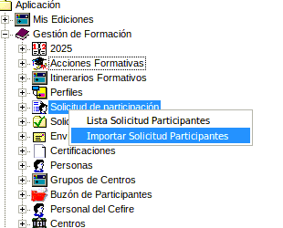
Ens pareixerà la següent pantalla:

I farem clic en Importar i ens demanarà un fitxer en format CSV i extensió .txt. És important que el fitxer estiga correctament formatat.

Un vegada importat l'arxiu li donarem a validar, i ens apareixeran dos possibles estats:
- OK: És correcte i es pot importar.
- NOOK: Hi ha algun error i no es pot importar.
Cladrà comprovar eixos errors.
L'arxiu que s'ha d'importar ha de tindre el següent format:
25FP99CF999 12345678 xx.xxxxxr@edu.gva.es NOM COGNOMS
25FP99CF999 12345678 xx.xxxxxr@edu.gva.es NOM COGNOMS
25FP99CF999 12345678 xx.xxxxxr@edu.gva.es NOM COGNOMS
- Els noms no van entre cometes.
- El primer camp és el codi de referència del curs.
- El segon camp és el DNI del participant.
- El tercer camp és el correu electrònic del participant.
- Els camps següents són el nom i els cognoms del participant.
- Els camps han d'estar separats per tabuladors, no per comes.
- El fitxer ha d'estar en format de text pla (.txt) i no en format Excel (.xlsx o .xls).
Podeu fer ús un document de Full de càlcul per a LibreOffice per a crear el fitxer CSV. Un cop creat, caldrà exportar-lo com a text pla (.txt) i assegurar-se que els camps estan separats per tabuladors. Podeu descarregar un exemple de plantilla ací per a utilitzar-lo com a guia. Caldrà que l'importeu al LibreOffice Calc i el modifiqueu.
Quan tingueu que crear un fitxer CSV, heu de Guardar como i Editar les opcins d'esportació.:

Les opcions que heu de seleccionar són:
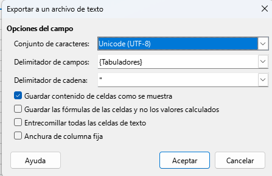
Una vegada tingueu guardat el fitxer heu de canviar-li l'extensió a .txt, per exemple: EXEMPLE.txt. I ja podeu importar-lo a Gesform.
SINCRONITZA PARTICIPANTS EN AULES
Una vegada tenim creades i publicades les llistes definitives, ja se podria sincronitzar amb la finalitat de tenir als participants en AULES, però és convenient esperar a que estiga a punt de començar el curs per tal de tenir la llista més real possible (per si ha hagut alguna renúncia des del moment de publicació de les llistes i el començament del curs).
Anem al nostre curs en Aules. I en el bloc administració obrim el desplegable GVA Aules

Triem l'opció Gestionar edicions
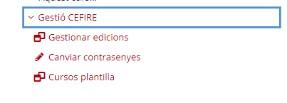
Triem el curs que volem sincronitzar
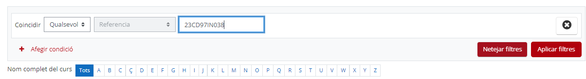

Una vegada tenim el curs anem a gestionar a la rodeta dentada.

Apareix la pantalla amb tots els participants del curs i els que ja estavem. A la part inferior tenim Gestionar edició, en el que podem indicar que volem sincronitzar, matriculacions i desmatriculacions. Si ja teníem algun participant matriculat manualment i que no està en gesform, caldrà desmarcar ¿Sincronitzar desmatriculaciones?
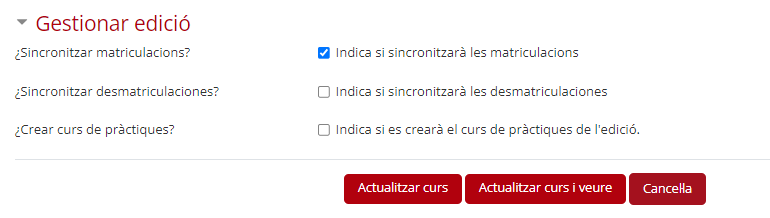
I Actualitzem curs.
BAIXES I ALTES CURS
Una vegada publicat el llistat definitiu pot haver alguna petició de baixa. Caldrà gestionar la baixa i la posterior alta d'un participant en llista d'espera.
GESTIÓ DE LA BAIXA -- Entrar al curs en Gesform a Gestión Solicitud de Participantes

Buscar la persona que vol donar-se de baixa. En la columna Desc. Estado fem doble clic a la paraula Confirmado, s'obrirà una finestra per canviaer l'estat a Renuncia i acceptem.


Donem a Aplicar i acceptem la finestra emergent que ix. I Aceptar i acceptem la finestra emergent que ix.

Posteriorment cal entrar a Participantes Edición.
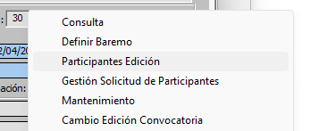
Busquem al participant i donem doble clic a la icona de la personeta.

S'obrirà una finestra emergent en la que tindrem que canviar l'estat a Baja, Calificación No apto i obrim el desplegable per indicar el motiu.
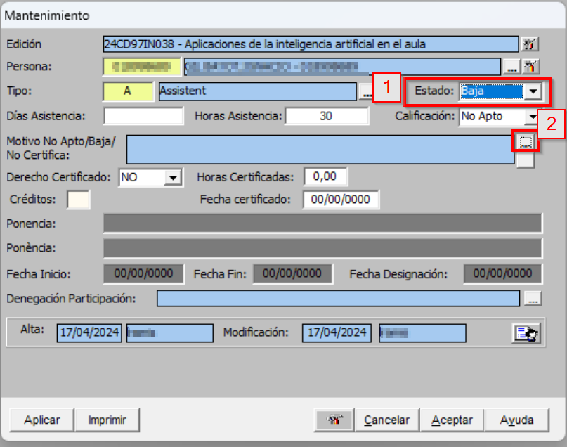
Busquem com a motiu Renuncia i apliquem aceptem i per que aparega al requadre caldrà clicar al quadrat que hi ha a la part de sota dels dos quadrats.


Apliquem i aceptem i una vegada refresquem ja tindrem la persona de baixa.
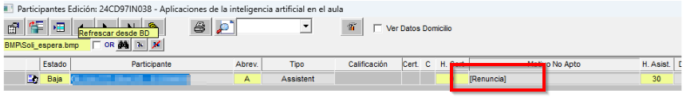
GESTIÓ DE L'ALTA -- Una vegada tenim al participant de baixa caldrà anar a Gestió Solicitud de Participantes per trucar a la persona que està a continuació en la llista d'espera.
Una vegada entres està ordenat ja per agafar al primer participant que no estiga en verd.
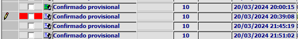
Per accedir a les dades li donem doble clic al nom i apareix la seua fitxa. On estan les dades per poder posar-se en contacte.
Si algú diu que no vol, apuntar el nom per tal de tenir clar que no vol per si es produeix altra baixa.
Quan et diga algú que si copiem el DNI de la persona, anem a Participantes Edición li donem a crear nou registre.
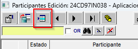
Si diu "esta fuera de plazo" no pasa res, aceptar. Eixirà una finestra com aquesta en la que cal posar el DNI i donar a intro, posarem Estado Alta, Calificación Apto i en Tipo A de assistent.


Refresquem per vore si està en participants. La icona que apareix al costat de Alta serà diferent per que s'ha posat de manera manual.

Una vegada s'ha tramitat la baixa i l'alta caldrà sincronitzar a Aules.
POSAR LES QUALIFICACIONS ALS ASSISTENTS
Quan els formadors ens passen les qualificacions caldrà introduir-les a GESFORM.
Entrar a l'edició on volem posar les qualificacions als participants. Anar a Mis Ediciones -- Ver i entrar a l'edició.

Anar a Extintor -- Participantes Edición

Per defecte tots els participants estan en APTO per tant només caldrà canviar a NO APTO als participants que no han superat el curs. Cerquem al participant que volem canviar a NO APTO i cliquem a la fitxa.
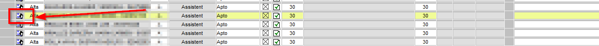
Una vegada en la fitxa canviem la qualificació a NO APTO i li donem als tres puntets per triar el motiu del NO APTO.
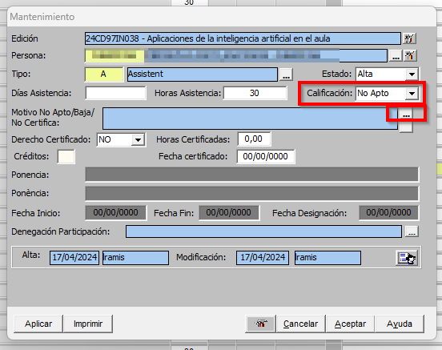
De la finestra que s'obri triem el motiu i li donem a la fletxa verda -- Apliquem i acceptem.
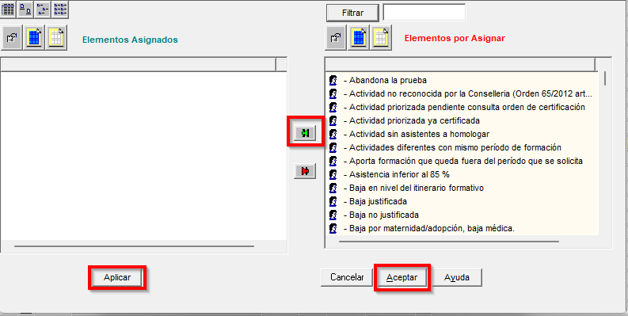
Finalment per que quede el motiu cliquem al requadre de baix dels tres puntets. I apliquem i acceptem.

IMPORTA MASSIVAMENT QUALIFICACIONS
Si el curs disposa de molts participants, este procediment pot ser massa llarg. Per això, si el formador ens ha passat un fitxer amb les qualificacions, podem importar-les de manera massiva. Farem clic en "Modificación masiva de calificaciones".

Apareixerà una pantalla on podrem importar un fitxer amb les qualificacions. El format del fitxer ha de ser un CSV amb una columna: DNI, la resta d'opcions les seleccionarem em la finestra que apareix:

- Part calificación: Triem la qualificació que volem posar, en aquest cas "No Apto".
- Motivo N.A.: Triem el motiu de la qualificació, en aquest cas "No realiza las actividades completamente".
- DNI: Escollim formato Gesform (Sense la lletra, només els números). Formato oficial sol donar problemes.
I fem clic en "Importar" lista de DNI. Caldrà que seleccionem un fitxer amb extensió txt, el fitxer només ha de contindre un llistat de DNI, sense comes ni cap altre caràcter. Un exemple de com ha de ser el fitxer:
12345678
23456789
34567890
45678901
Una vegada seleccionat el fitxer, fem clic en "Importar" i apareixerà una pantalla amb els DNI que s'han importat correctament. Si tot és correcte, fem clic en "Aplicar" i les qualificacions es posaran als participants.
Nota
Es convenient abans de fer la importació massiva, comprovar si els participants estan tots com a Apto, així al posar el No Apto ja tindrem assegurats que està tot el llistat correcte.